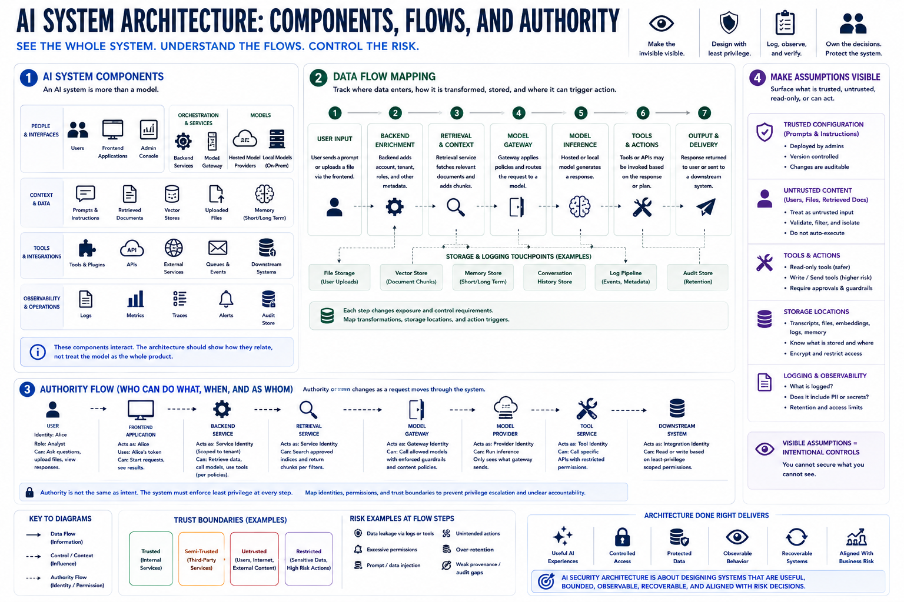

AI System Components and Data Flow
Connecting to LMS... Progress: in progress

Narration
An AI system usually contains more than a model. It may include users, frontend applications, backend services, model gateways, hosted model providers, local models, prompts, system instructions, retrieved documents, vector stores, uploaded files, memory, tools, APIs, plugins, logs, queues, and downstream systems. The architecture should show how these pieces relate instead of treating the model as the whole product.
Data flow mapping answers where information enters, where it is transformed, where it is stored, and where it can trigger action. A user may upload a file. A backend may enrich the request with account metadata. A retrieval service may add document chunks. A model gateway may call a hosted model. A tool service may invoke an API. A log pipeline may retain metadata. Each step changes exposure and control requirements.
Authority flow is just as important as data flow. Authority flow shows which identity or permission is used when the system reads data, calls a tool, retrieves a document, writes memory, or changes a downstream system. A user may ask for something, but a backend service identity may perform the action. If the architecture does not show that authority transfer, teams can miss privilege escalation, shared-account risk, and unclear accountability.
A useful diagram should make invisible assumptions visible. Which prompts are trusted configuration? Which documents are untrusted content? Which tools are read-only? Which tools can write or send? Which systems store transcripts or embeddings? Which logs include sensitive content? AI security architecture starts by making those paths explicit enough that teams can design controls intentionally.